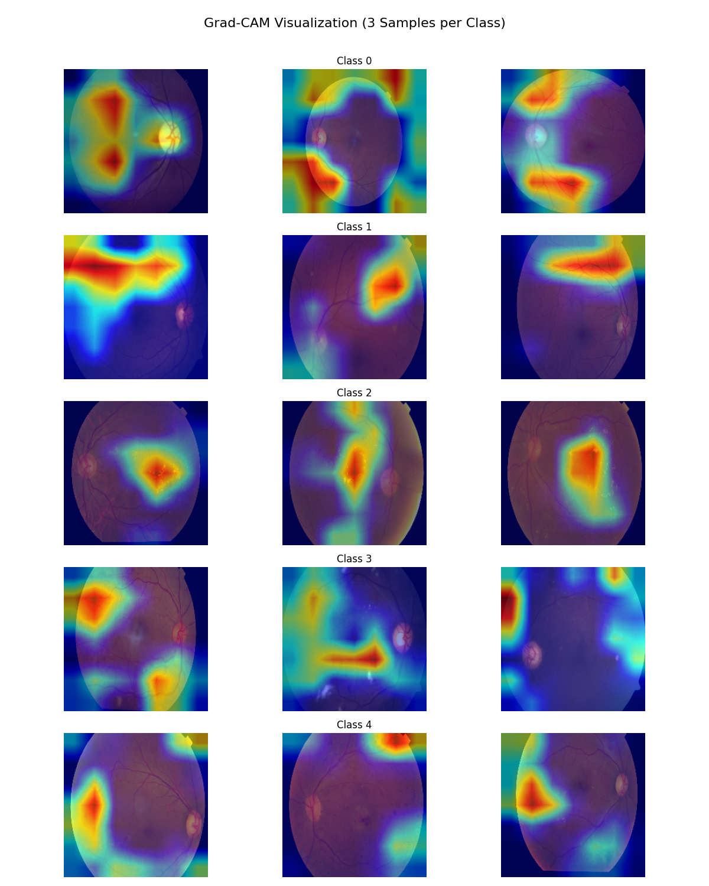

Research manuscript
XDR-Net.
Compact attention for diabetic retinopathy detection.
The research
question.
Can a compact attention bridge improve retinal image grading while keeping the model efficient?
Abstract / research summary
XDR-Net combines EfficientNet-B0 with a single-block attention bridge for diabetic retinopathy detection. Retinal preprocessing, balanced optimization, and test-time augmentation address visual variation and class imbalance. The public repository reports evaluations across APTOS 2019, EyePACS, Messidor, and IDRiD, alongside Grad-CAM visualizations. The design studies the balance between classification performance, model size, and inference cost.
Inside the
method.
- 01
Prepare and balance
Retinal preprocessing and 384 × 384 inputs are paired with class weighting and balanced sampling.
- 02
Add a compact attention bridge
A single attention block operates on the convolutional feature representation.
- 03
Compare inference settings
Single-pass and four-view test-time augmentation are evaluated separately.
What the
results show.
On APTOS, the reported accuracy rises from 94.95% for single-pass inference to 97.38% with four-view augmentation. This improvement comes with additional inference cost and should be read alongside the evaluation protocol.
| Dataset | Accuracy | Macro F1 | Macro AUC |
|---|---|---|---|
| APTOS 2019 | 97.38% | 97.38% | 97.99% |
| EyePACS | 97.45% | 98.35% | 98.90% |
| Messidor | 96.82% | 96.95% | 97.50% |
| IDRiD | 95.90% | 96.17% | 96.75% |
Repository-reported image-level results. APTOS uses a fixed 550-image validation subset and four-view test-time augmentation; patient independence is not established.
Research in view.
Select a figure to explore it.
 View full figure
View full figure 

View full figureThe complete
work.
XDR-Net: A Hybrid Convolutional Network with a Single-Block Attention Bridge and Balanced Optimization for Diabetic Retinopathy Detection
XDR-Net: A Hybrid Convolutional Network with a Single-Block Attention Bridge and Balanced Optimization for Diabetic Retinopathy Detection. Research manuscript.
Metrics and evaluation context follow the current public XDR-NET README. Figures are from the same repository.